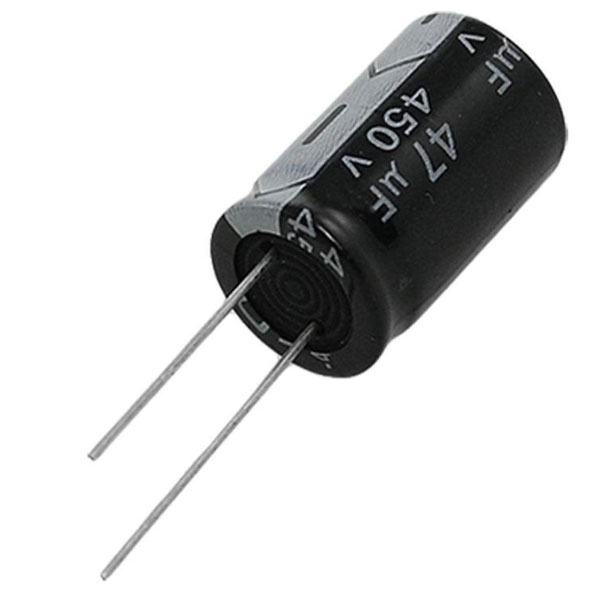
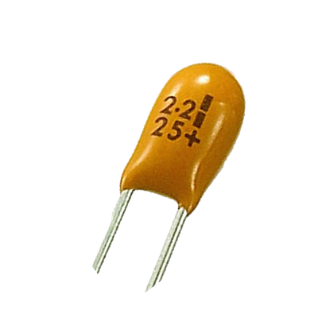
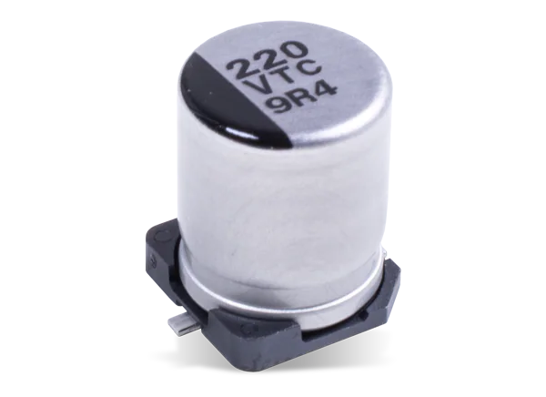
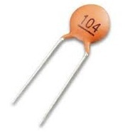
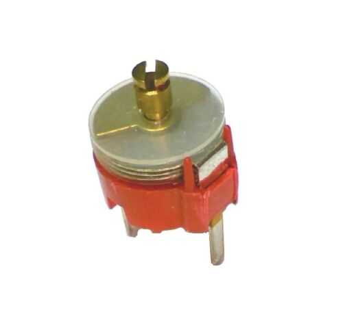
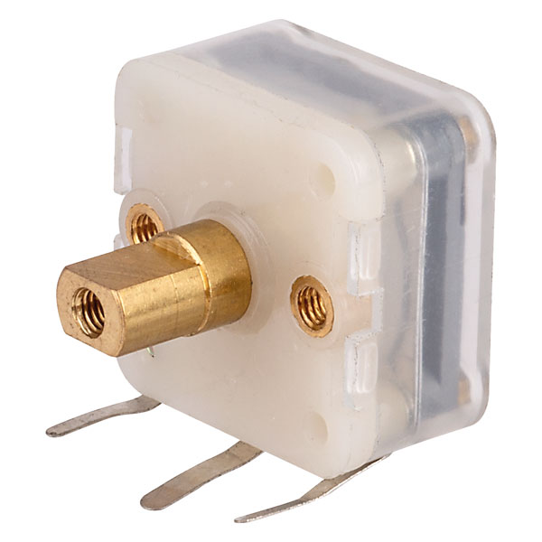

Polar Capacitor
Polar capacitors or polarized capacitors are such type of a capacitor whose terminals (electrodes) have polarity; positive and negative. The positive terminal should be connected to positive of supply and negative to negative. Reversing the polarity will destroy the capacitor. These type of capacitors are only used in DC applications.
Electrolytic capacitor

An electrolytic capacitor is a type of polar capacitor that uses an electrolyte as one of its electrodes to maintain heavy charge storage. It is made up of two metal plates whose positive (anode) plate is covered with an insulating oxide layer through anodization. This insulating layer acts as the dielectric. The electrolyte is used as the second terminal cathode. The electrolytes can be solid, liquid or gas type material.
Tantalum Capacitor

Tantalum capacitor uses solid electrolytes such as manganese dioxide (MnO2) or polymer.
Solder mount Capacitor

SMD / SMT surface mount capacitors are the most widely used for of capacitor today - being small, leadless and easy to place on a PCB they are ideal for high volume manufacture. Their performance is also very good, some performing particularly well at RF
Ceramic (disc cap) capacitor

As the name suggests the ceramic capacitor is a type of non-polar capacitor in which the dielectric used is a ceramic material. It is made of two layers of metal (usually nickel and copper) with ceramic (Para electric or Ferroelectric) as the dielectric. These alternating layers are stacked together to provide high capacitance value. The minimum thickness of the ceramic dielectric layer is about 0.5 μm. The voltage rating of the capacitor depends on its dielectric strength. Furthermore, the terminals are attached to electrodes & the capacitor is covered in ceramic protective layer against moisture.
Polyester capacitor

Polyester capacitors are capacitors composed of metal plates with polyester film between them, or a metallized film is deposited on the insulator. They have a high temperature coefficient. They have high isolation resistance, so they are good choice capacitors for coupling and/or storage applications.
Variable Capacitor
a capacitor where the user can the change the value of the capacitance of the capacitor mechanically. They don’t have fixed capacitance value instead they provide a range of values. They are used in tuning LC circuits for a radio receiver, impedance matching in antennas.
Tuning Capacitor

Trimmer capacitor
